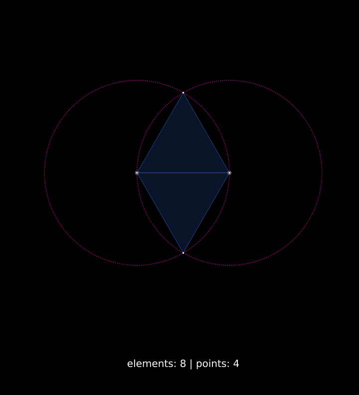
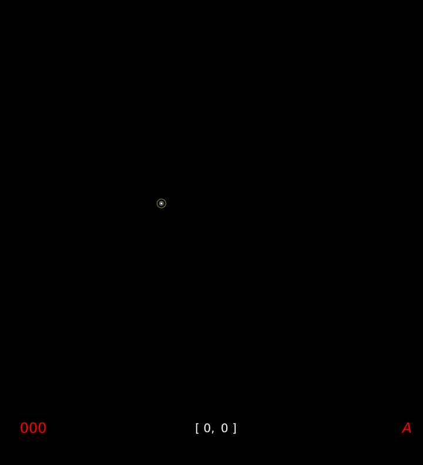
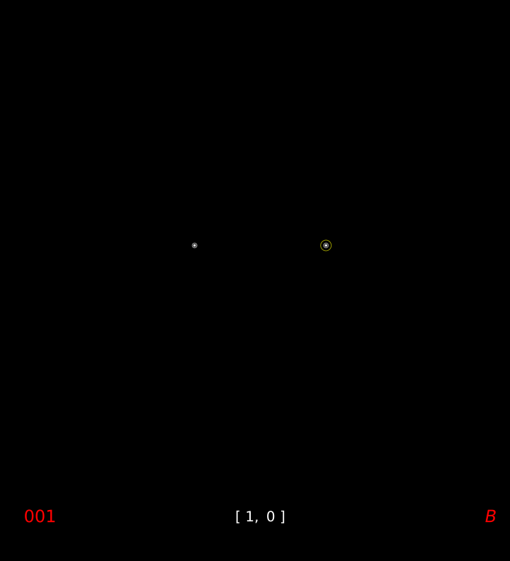
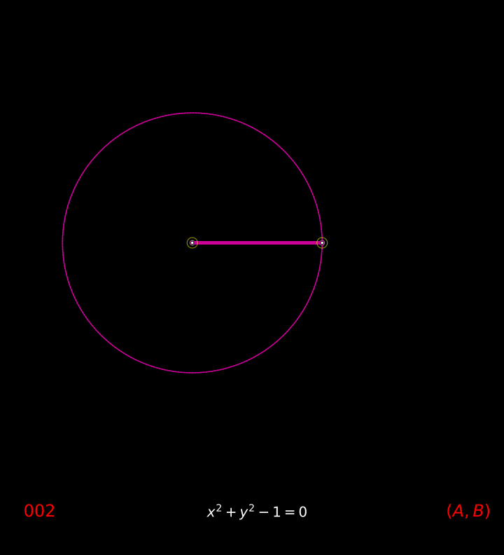
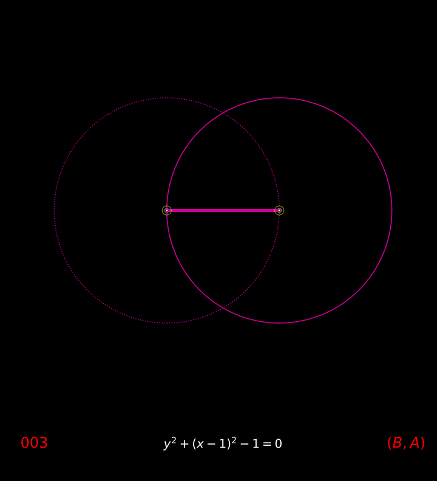
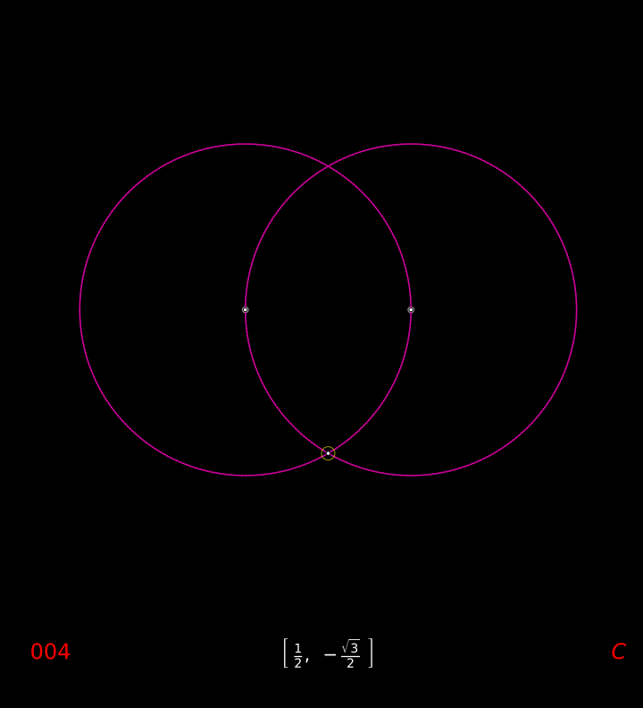
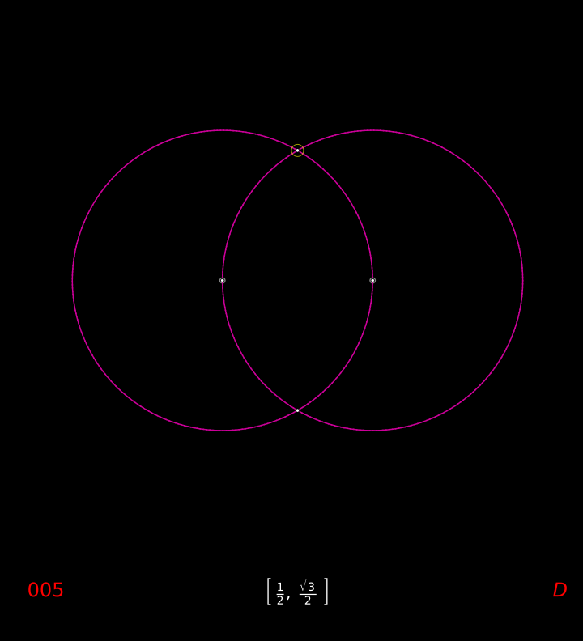

construct an equilateral triangle on a segment
I.1
On a given finite straight line to construct an equilateral triangle.
—Euclid
construct an equalateral triangle on a segment
point \(A\)
point \(B\)
PROBLEM: construct an equilateral triangle on the segment \(\bar{AB}\).
construct circle \((A, B)\) as \(c_1\).
construct circle \((B, A)\) as \(c_2\).
Todo
define intersection point
identify the two intersection points of circles \(c_1\) and \(c_2\) as points \(C\) and \(D\)
 As the circle is defined, all points on the perimeter are an equal distance from the center.
\(\therefore\) segment \(\bar{AC}\) is equal to \(\bar{AB}\)
\(\therefore\) segment \(\bar{BC}\) is equal to \(\bar{AB}\)
But CA was also proved equal to AB; therefore each of the straight lines CA, CB is equal to AB.
\(\therefore\) \(\bar{AC}\) is also equal to \(\bar{BC}\)
\(\therefore\) the three segments \(\bar{AB}\), \(\bar{BC}\), \(\bar{AC}\) are equal to one another.
\(\therefore\) the triangle \(\triangle{ABC}\) is equilateral; and it has been constructed on the segment \(\bar{AB}\).
PROBLEM SOLVED
Todo
demonstrate the second triangle
dependencies
equilateral triangle
construct a circle
Things which are equal to the same thing are also equal to one another